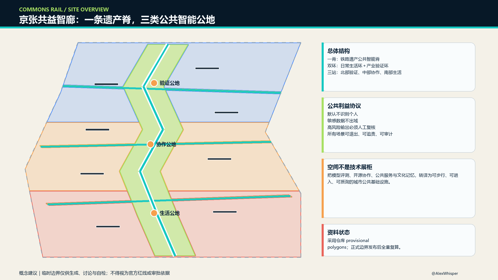
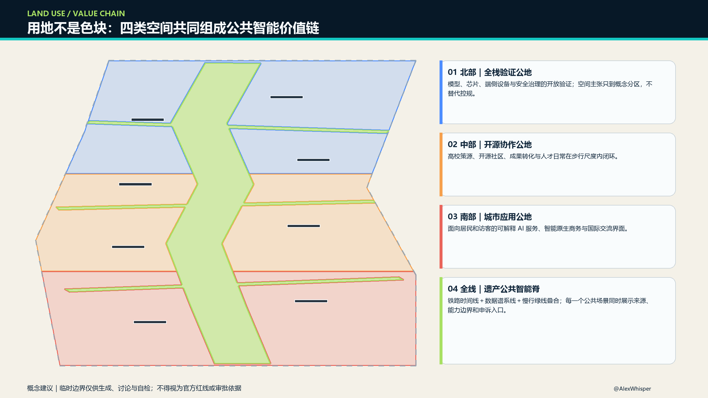
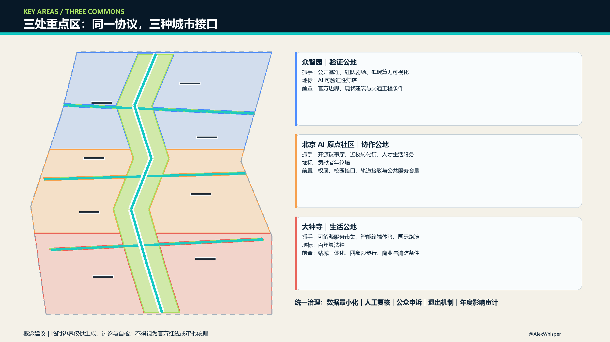
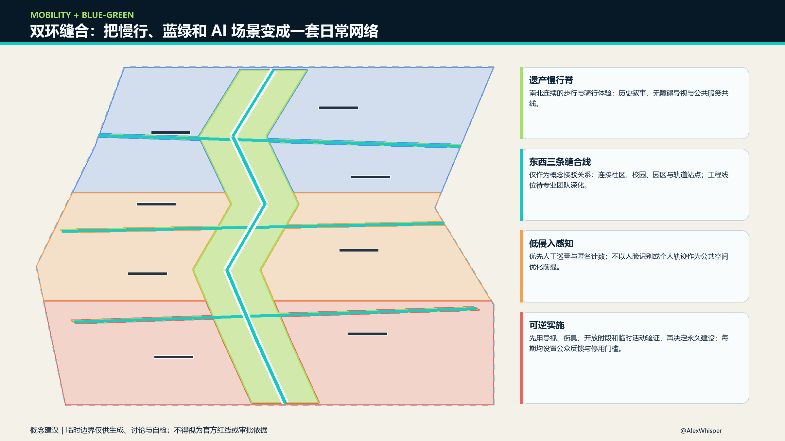
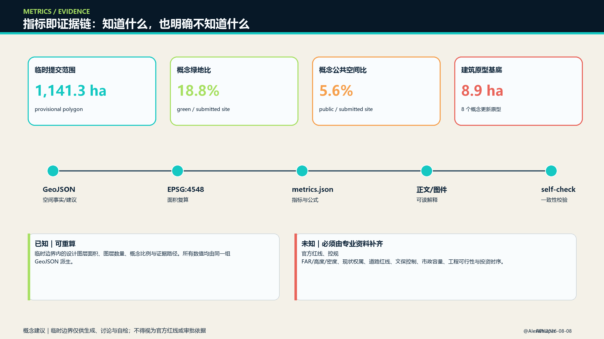

资料与自检状态
临时边界警示：本页采用仓库 provisional polygons，只用于方案生成、讨论与自检；不是官方红线，不支持审批、权属、精确控制或工程结论。正式 polygons 发布后须重算全部图层、指标与图件。
package: professional_design_packagegeometry: provisional_constrainthuman review required总览地图 · 三层范围

统筹研究范围负责创新生态与未来城市策略；总体设计范围组织城市更新、功能、慢行与蓝绿网络；三处重点区域验证具体空间与运营抓手。
核心指标
临时提交范围1141.3 ha
概念绿地比18.8%
概念公共空间比5.6%
重点区域3
用地分区 · 建筑与更新项目

保留并适配
优先使用既有空间与可逆内装，具体对象待现状测绘与权属校准。
低扰动改造
围绕首层开放、共享设施、无障碍和低碳更新形成原型。
概念补缺
仅表达空间能力缺口，不构成新建规模、拆迁或投资结论。
重点区域

交通慢行 · 蓝绿公共空间

线位仅表达需要解决的关系，不判断桥隧、道路红线、轨道或地下工程可行性。
AI 场景
4 个产业测试验证
模型红队、端侧无障碍、城市智能体沙盒、低碳算力协同。
8 个公共体验场景
开源发布、慢行共诊、生活服务、法律导航、教育、文化、运维、全球活动周。
统一场景护照
数据来源、能力边界、人工复核、退出申诉与复盘日期。
任务覆盖
| 任务 | 方案响应 |
|---|---|
| agent.1 总体概念 | COMMONS RAIL、一脊双环三公地、轨道对话气泡识别 |
| agent.2 创新生态 | 六个案例、研究—开源—验证—应用—复盘循环 |
| agent.3 场景城市 | 六类画像、十二场景、四项产业验证 |
| agent.4 公共空间 | 四个朝圣/荣誉节点与公共空间组件协议 |
| agent.5 文化叙事 | 铁路时间线＋中关村制度创新＋AI数据谱系 |
| agent.6 长期运营 | 周/月/季/年活动节律与六步场景门 |
指标与证据

来源
官方公告、清权的智能体任务书摘录、仓库 site package、官方专业标准本地快照与 public source registry。图像均由本投稿 GeoJSON、metrics 与矩阵派生，不使用远程底图或第三方图片。
假设
官方精确边界、控规 FAR/高度/密度、现状建筑与权属、道路红线、文保控制、市政容量、工程可行性和投资时序均待补。空间建议属于概念建议，可供专业团队深化研究。